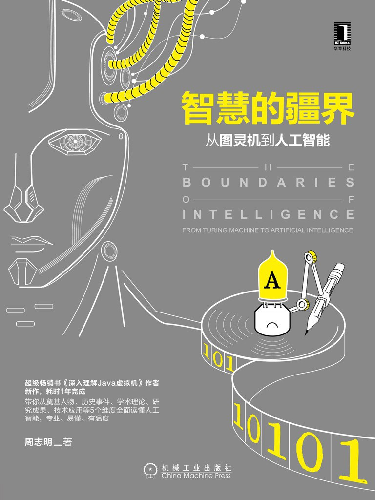

《智慧的疆界》

总体观点
人工智能六十余年的发展并非单一算法的线性跃进，而是一场由符号主义、连接主义和行为主义三大范式构成的辩证演化史。技术浪潮的起落与周期的冷暖，本质上是算力规模、算法模型与现实世界数据丰度三者之间的动态失衡与再平衡。
机器“理解”现实的方式经历了从“自上而下形式化逻辑规则演绎”到“自下而上高维空间统计概率拟合”的认识论转移。现代深度学习在感知层面的空前胜利，确立了经验连接主义的统治地位，但也不可避免地暴露出黑盒可解释性缺失与跨领域常识推理匮乏的理论天花板。
探索机器智能的终极意义不仅在于打造强大的自动化生产力工具，更在于通过构建人工系统这一反光镜，逆向解构人类自身的意识本质、理性边界与心灵结构。在人机共生的未来图景中，理性计算属于机器，而意义赋予、价值权衡与伦理守护始终是人类独有的文明疆界。
核心观点
-
1. 图灵机奠定了通用计算根基，而图灵测试划定了功能主义智能评判标尺
阿兰·图灵将抽象数学计算规约为纸带读写的有限状态自动机，并在1950年提出绕开意识本体论争议的行为模仿测试，为人工智能奠定了工程实现的基石。
图灵避开了“机器能否思考”的哲学泥潭，代之以模仿游戏（Imitation Game）：若人类裁判无法通过键盘问答区分对面是人还是机器，即可判定机器具备等效智能。 -
2. 达特茅斯会议确立学科独立地位，但过度乐观的预言埋下了信任危机的种子
麦卡锡、明斯基、西蒙等先驱首次提出“人工智能”这一术语，但对短期突破能力的严重误判导致科研资助在遭遇现实瓶颈后迅速断崖式崩塌。
赫伯特·西蒙曾乐观预言十年内计算机将成为国际象棋世界冠军并证明重大数学定理，结果受限于当时的内存与算力，早期的“逻辑理论家”（Logic Theorist）仅能处理极简玩具问题。 -
3. 符号主义将思维还原为逻辑演算，终因常识“维数灾难”与知识获取瓶颈而受挫
物理符号系统假设认为智能是对离散符号的表征与推理，专家系统的爆发将其实用化推向顶峰，但规则手工录入的脆弱性与组合爆炸使其无法应对真实世界的开放动态性。
20世纪80年代大红大紫的XCON专家系统虽为DEC公司每年节省数千万美元，但维护成千上万条互相关联的IF-THEN规则成为无法承受的工程噩梦，Cyc常识库项目耗时数十年亦未能穷尽人类常识。 -
4. 连接主义模拟生物神经网络，在反向传播与大算力加持下实现历史性逆转
从麦卡洛克-皮茨神经元模型到明斯基对单层感知机异或问题的致命批判，人工神经网络历经两次漫长严冬，因辛顿等学者在反向传播、自编码器与GPU并行计算上的坚持而迎来爆发。
1969年明斯基与帕珀特出版《感知机》证明单层感知机无法解决异或（XOR）线性不可分问题，直接导致神经网络研究经费中断近二十年，直到Rumelhart与Hinton等人重新发掘反向传播（Backpropagation）多层训练算法。 -
5. 行为主义倡导“无表征的智能”，开辟了感知-动作直连的具身与进化路线
受控制论与生物进化论启发，行为主义主张智能必须依赖物理实体与真实环境的实时互动产生，摒弃集中式世界模型，推动了自主移动机器人与现代具身智能的发展。
罗德尼·布鲁克斯（Rodney Brooks）提出包容架构（Subsumption Architecture），其制造的六足行走机器人“成吉思”无需复杂的中心世界地图建模，仅凭避障、爬行等底层反射行为的层级叠加便能在复杂地形中稳步前进。 -
6. 现代深度学习的本质是用端到端特征表征学习消解人工特征工程
传统机器学习算法严重依赖专家经验设计特征抽取器，而深度卷积与循环网络通过多层非线性映射自动从原始像素或文本中提炼高阶语义表征，彻底重塑了计算机视觉与NLP领域。
2012年AlexNet在ImageNet图像识别挑战赛中将Top-5错误率断崖式降低超过10个百分点，终结了SIFT、HOG等传统人工特征工程数十年的学术统治。 -
7. 人机共生的终局并非零和取代，而是在增强智能中重勘人类价值底线
面对AlphaGo击败人类棋手与生成式大模型的涌现，机器在封闭规则与海量概率匹配上已超越肉身极限，人类的不可替代性退守至同理心、审美直觉、伦理定力与主观意图的创生。
AlphaGo在对弈李世石时下出的“第37手”打破了千年围棋定式，人类棋手从最初的错愕转为将AI作为开阔棋力认知与启发创意的超级外脑，演化为人机共研的新范式。
全书结构
-
第1章 洪荒年代
回溯计算机器与人工智能的思想前夜，阐释图灵机模型如何打破计算边界，剖析图灵测试的功能主义哲学意涵，以及从拟人心、拟人脑到拟人身的三条早期智能探索路径。
详细解析阿兰·图灵1936年关于可计算数与判定问题的经典论文，以及1950年提出图灵测试时对机器能否思考的哲学辩驳。 -
第2章 迈向人工智能
全景还原1956年达特茅斯夏季研讨会的历史细节与学术交锋，梳理麦卡锡、明斯基、纽厄尔与西蒙等学科奠基人的学术版图，评析逻辑理论家等早期符号程序的划时代意义。
还原达特茅斯会议期间麦卡锡力排众议将学科命名为“Artificial Intelligence”的幕后博弈，以及西蒙与纽厄尔向同行展示首个自动证明《数学原理》定理的“逻辑理论家”程序时的震撼。 -
第3章 符号主义学派
系统阐释符号主义（逻辑学派）的核心支柱——物理符号系统假设，梳理从谓词逻辑推理、启发式搜索到专家系统工程化的演进历程，剖析其遭遇维数灾难与常识瓶颈的深层根源。
以DENDRAL分子结构推断系统与MYCIN细菌感染诊断系统为例，揭示专家系统如何将行业专家规则代码化，并分析规则膨胀导致的知识冲突死锁。 -
第4章 连接主义学派
详述模拟大脑生物神经网络的连接主义兴衰史，从M-P模型、赫布学习律、单层感知机的问世，到明斯基异或批判引发的第一次AI凛冬，再到反向传播算法的破晓重生。
深入剖析罗森布拉特（Rosenblatt）感知机硬件如何识别简单图案，以及明斯基数学论证其无法解决XOR问题对美国国防高级研究计划局（DARPA）撤资产生的毁灭性冲击。 -
第5章 行为主义学派
挖掘源自维纳控制论与自组织系统的行为主义演进脉络，分析机械因果观与环境自适应反馈，阐释布鲁克斯包容架构如何颠覆传统知识表征，开创具身智能与仿生机器人新学派。
探讨诺伯特·维纳《控制论》中的负反馈调节机制，以及布鲁克斯“大象不会玩国际象棋，但大象拥有真实生存智能”的无表征智能宣言。 -
第6章 机器学习概览
系统构筑现代机器学习的理论框架，辨析监督学习、无监督学习与强化学习的问题边界，拆解从数据清洗、特征提取、模型训练到交叉验证与过拟合防范的工程全闭环。
对比支持向量机（SVM）、决策树与朴素贝叶斯在垃圾邮件分类中的泛化差异，详解偏差-方差权衡（Bias-Variance Tradeoff）在工业级调优中的核心法则。 -
第7章 深度学习时代
复盘2006年以来深度学习引爆的第三次AI高潮，评述杰弗里·辛顿等学者利用受限玻尔兹曼机逐层预训练破局，以及卷积网络（CNN）、循环网络（RNN）伴随GPU算力爆发的技术跃迁。
详解Hinton团队在ImageNet大赛中使用ReLU激活函数、Dropout正则化和两块GTX 580显卡训练AlexNet，以绝对优势夺冠并引发产业界算力军备竞赛的里程碑事件。 -
第8章 与机器共生
深入探讨强人工智能、技术奇点、超级智能与人机协作的终极命题，审视图灵测试在新时代的局限性，在算法对弈与自动化浪潮中反思人类意志、伦理责任与智能的终极边界。
剖析AlphaGo与AlphaZero脱离人类棋谱先验知识通过纯自我博弈进化出的全新宇宙观，探讨人类在算法裁判面前如何保卫自身的道德自决权。